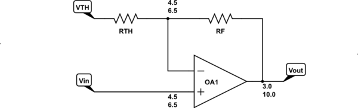
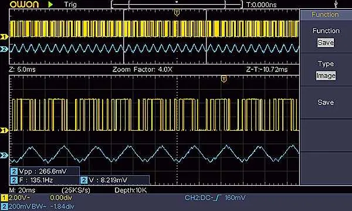

Este trabalho culmina com o Projeto, implementação e testes de um PID com filtro derivativo e anti-windup para fechar uma malha de controle de posição ou de controle de velocidade num kit real Feedback, usando placas Arduino, quase nada de hardware adicional, PC e software para processamento numérico de cálculos.
Esta atividade prevê a execução de alguns passos intermediários (além do estudo teórico envolvido com este tipo de controlador).
Para realização deste trabalho estão sendo previstas atividades como:
Descrição de algumas atividades:
1) Piscar Led (1 Hz):
A ideia é programar uma rotina para tratamento de interrupção gerada por software ou gerada por temporizador. Os estudantes devem selecionar um timer adequado da placa Arduino, programar o prescaler do mesmo, e codificar uma rotina de tratamento de interrupção associado com o estouro de valor do timer adotado (rotina de tratamento de interrupção ou ISR=Interrupt Service Routine), para que um led conectado ao pino conectado ao pino 13 fique ativado durante 1 segundo e depois, na sequencia, fique desativado por outros 1 segundos e assim sucessivamente, com o led variando seu brilho na frequencia exata de 1 Hz. O objetivo aqui é o estudante se familiarizar com programação de ISR.
Sugere-se a página Arduino Timer Interrupts (de Amanda Ghassaei) (Acessada em 26/10/2022) como exemplo de programação de ISRs.
2) Gerar senóide à 2 KHz (opção 1: Uso de circuito externo D/A):
Aqui a tarefa vai se complicando aos poucos. Semelhante ao item anterior, os estudantes devem programar uma ISR para fazer aparecer na saída de um circuito Conversor de sinal Digital para Analógico (placa D/A), uma onda senoidal variando na frequencia de 2 KHz. Esta atividade depende de um circuito (já pronto) de conversor D/A, já que a placa Arduíno Onde não contempla saída D/A.
Detalhe: o Arduino não possui saída D/A, o que implica no eventual uso de um circuito externo ou implementação de um PWM com saída filtrada conforme sugerido no próximo item. Para criação de um simples circuito analógico para D/A se pode sugerir um circuito usando Amp.Op. e redes R2R para criar um “flash ADC“. O detalhe é que este conversor provavelmente ainda vai exigir um circuito extra para ajuste de ganho e offset do sinal de saída gerado:

Na própria página Arduino Timer Interrupts (de Amanda Ghassaei) aparece no tópico “Step 5: Example 3: DAC” um exemplo de geração de sinal analógico usando rede R2R e pinos de 0 à 7 do Arduino.
A página Arduino Waveform Generator (também de Amanda Ghassaei) mostra como transformar uma placa Arduino Uno, num gerador de funções (ou sinais) de . Particularmente o item “Step 8: R2R DAC on Arduino Shield: Part 3” mostra o circuito analógico associado com a D/A, usando rede R2R com resistores de 10K
Um exemplo de circuito adicional de ajuste de ganho e offset aparece em How to implement gain and offset in a single opamp?, que pode ser previamente simulado usando Circuit Lab [aqui].
Mas infelizmente ainda não foi projetado ou está disponível um circuito análogico (ou shield para Arduino) com o a D/A + circuito de ajuste de ganho e offset.
2b) Gerar senóide à 40 Hz (opção 2: uso de saída PWM filtrada):
Semelhante ao caso anterior, a idéia aqui é filtrar (usando circuito RC) uma das saídas PWM da placa Arduino e fazer variar o duty-cycle deste pino para gerar uma tensão média dentro de uma faixa limite de tensões correspendo ao duty-cycle = 0% e duty-cycle = 100%. Note que será necessário conectar um circuito RC à alguma das saídas PWM da placa Arduino para gerar a tensão média e fazer “desaparecer” a onda quadrada original criada na saída deste pino.
Em seguida, usando ISR, programar a síntese de uma onda senoidal variando na frequência de 40 Hz.
Obs.: os estudantes devem inclur na documentação referente à esta etapa, os códigos gerados (acompanhados de breves comentários chaves), apenas os códigos que funcionaram, e o documento deve ainda conter a imagem da onda senoidal criada. Portanto, para esta atividade os alunos devem trazer um pendrive USB formatado em FAT32 para capturar os dados gerados pelos osciloscópios presentes no laboratório.
Sugere-se a página: Arduino Analog Output: Impossible Analog; using Digital Pins. How to generate an Analog Output varying from 0V to 5V using only Digital pins! (acessada em 03/11/2022) como exemplo para realização desta atividade.
Nota: este método de geração de um “sinal analógico” só funciona para sinais de baixa frequencia (entre 20 à 60 Hz).
Para fins de documentação, sugere-se capturar telas do osciloscópio demonstrando os resultados obtidos.

3) Composição Senoidal:
A ideia aqui é que os estudantes sintetizem uma onda quadrada realizando soma das senóides que a compõesm (lembrar Série de Fourier), até sua 5a-harmónica. Esta síntese deve ser feita usando ISR e canal PWM de saída do Arduino.
Notar que uma onda quadrada pode ser sintetizada com base na Série de Fourier:
onde
Assim, as primeiras harmônicas de uma onda quadrada poderiam ser sintetizadas como:
onde
4) Aquisição de Dados A/D:
A ideia aqui é capturar dados de uma das 4 entradas analógicas da placa Arduino e gerar um arquivo de “log” (arquivo texto), num PC, via conexão USB/serial. A idéia é preparar rotinas para leitura de dados de algum A/D a uma taxa fixa e precisa de 20 Hz, usando ISR. Notar que não deve haver interferência entre o timer usado para esta ISR e o timer usado para a comunicação serial dos dados capturados. Sugere-se que na saída serial (usar janela de “Terminal” no Windows, tipo Putty) seja criada uma string no seguinte formato:
112 756
onde a primeira coluna se refere ao instante de amostragem unsigned long ou unsigned int, que deve gerar números inteiros variando de 0 até 4.294.967.295 (
Sugere-se usar o caractere TAB (código ASCIII = 9) ou espaços em branco para separar os dados. Normalmente o Matlab ou Octave, interpretam este caracter como um separador de “campo” de dados. Na linguagem de programação ANSI C, o caracter TAB pode ser obtido usando a opção \t dentro da função printf(), por exemplo, algo como: printf("%u\t%i \n", k, dados0);. No Arduino, o caracter TAB pode ser facilmente gerado na porta serial usando o comando: Serial.print("\t"); Arduino > Reference > Language > Functions > Communication > Serial > Print > Serial.print().
Eventualmente pode-se usar PuTTY para Windows para captura dos dados gerados pela porta serial do Arduino.
A respeito da comunicação serial entre Arduino e PC se sugere no mínimo 9600 bps e preferencialmente 115.200 bps sempre que possível). Note que (por hora) não está prevista nenhuma interface para painel LCD conectada à placa Arduino. Assin, a única forma de acompanhar os dados obtidos é via informação transmitida pela porta serial/USB do Arduino.
Sugere-se que os estudantes transformem os dados capturados, num gráfico usando Matlab ou Octave para o mesmo (incluir o códiugo usado). E incluir o link com cópia do arquivo de dados gerado.
5) Aquisição de vários dados A/D
A idéia, semelhante ao item anterior, é que desta vez, seja gerado um arquivo texto com mais colunas, cada coluna extra (além da inicial referente ao instante
6) Teste de PID com Filtro Derivativo
Durante a execução dos passos, os estudantes (orgranizados em equipes: duplas de alunos), devem documentar o trabalho prático sendo realizado. Propoê-se a confecção de um arquivo texto compatível com Markdown, capaz de incorporar equações, figuras e partes de código ou códigos completos, além de referênicas para páginas WEB que foram consideradas úteis.
Sugere-se que também, para cada parte prática realizada, que os estudantes, indiquem o tempo gasto para realizar aquela etapa. Por exemplo, começamos a programas o Kit Arduino com a primeira rotina de interrupção para piscar um led à 1 Hz, às 14:30h. terminamos de gerar o código (sem erros) às 14:45h. Conectamos o kit Arduíno ao osciloscópio para comprovar formas de onda: tempo estinmado: 5 minutos. E assim por diante.
A ideia é quase gerar um “diário” que deixe bastante claro como cada tarefa foi executada e o tempo estimado para execução de cada tarefa. Ao final deste projeto, várias páginas WEB podem ser criadas. Onde cada página reflete a atividade ou trabalho realizado durante uma tarde (aula), refletindo a implementação e resultados obtidos naquela atividade.
Sugere-se que seja criada uma página inicial que relacione todas as atividades realizadas na sequencia cronólogica na qual foram realizadas, refletindo os passos intermediários que permitiram lograr o projeto final. Por exemplo: 1) Atividade #1) Piscar led à 1 Hz, 2) Atividade #2) Gerar onda senoidal de 100 Hz, 3) Atividade #3) gerar composição de ondas senoidais (síntese da onda quadrada até 5a-harmônica), etc, culminando com 12) Implementação final do PID com filtro derivativo e anti windup.
Prof. Fernando Passold, em 03/11/2022.